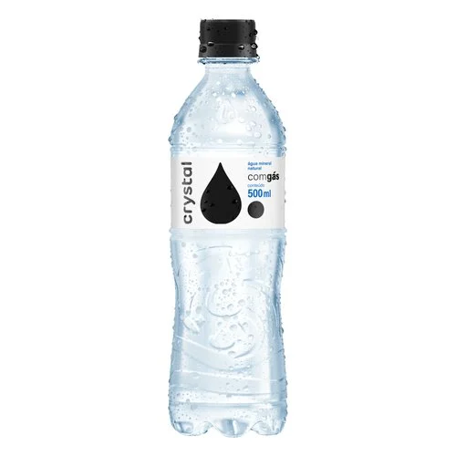
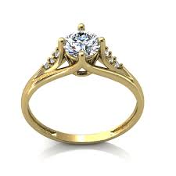

-
Objeto: Garrafa de Água
Resultado do Google Lens:
Resultado do App Web de Identificação de Imagem em Tempo Real:
Mini Conclusão:
-
Objeto: Anel
Resultado do Google Lens:
Resultado do App Web de Identificação de Imagem em Tempo Real:
Mini Conclusão:
Conclusão Geral